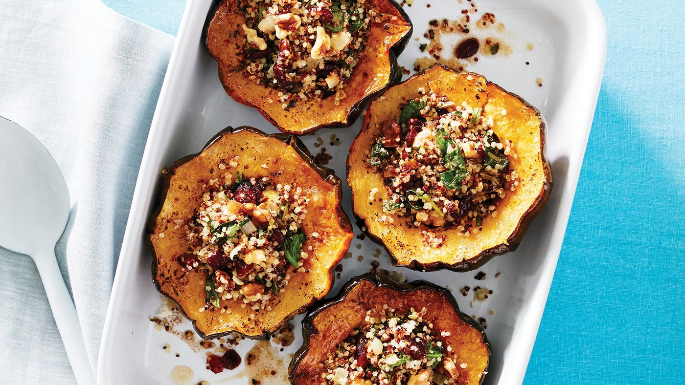

Go back to main page
Stuffed Squash

We love food that forms its own edible bowl, like a bread bowl and… well, like a bread bowl. But also: like this stuffed acorn squash recipe, where the roasted squash become individual sized bowls for a mix of quinoa, walnuts, cranberries, and other savory-sweet fillings. This would make a perfect and dramatic entree for a holiday gathering, but it’s simple and quick enough to put together for a casual weeknight dinner.
Ingredients
- 2 medium to large acorn squashes, halved and seeded
- 1/4 cup olive oil
- 2 pinches each sea salt and ground black pepper, divided
- 1/2 quinoa, rinsed
- 1 yellow onion, diced
- 2 tbsp apple cider vinegar
- 2 tbsp raw honey
- 4 tsp fresh lime juice
- 1 tbsp Dijon mustard
- 1/2 tsp ground cayenne pepper, optional
- 2 cups of spinach finely chopped
- 1/2 cup naturally sweetened dried cranberries, chopped
- 1/2 cup raw unsalted walnuts, chopped
Steps to cook
- Preheat oven to 350°F. Cut a little bit off the end of each squash half, if needed, to help it stand cut side up. Lightly coat squash with 1 tbsp oil, sprinkle with pinch each salt and pepper and place cut side down on a large baking sheet. Bake for 40 minutes.
- Meanwhile, cook quinoa: In a small saucepan, bring quinoa and 3/4 cup water to a boil. Reduce heat to low, cover and simmer for 10 minutes. Remove from heat; fluff with a fork.
- Meanwhile, in a small skillet on medium, heat 1 tbsp oil. Add onion and cook until softened and starting to turn golden, 4 to 6 minutes.
- In a large bowl, whisk together remaining 2 tbsp oil, vinegar, honey, lime juice, mustard, cayenne pepper (if using), and remaining pinch each salt and pepper. Add quinoa, onion, spinach, cranberries and walnuts; toss to coat.
- To each squash cavity, place one-quarter of quinoa mixture in each well, pressing to fit.
- To heat, place one serving on baking sheet and cook for 15 minutes at 350°F or until squash is soft and filling is hot. To heat leftovers directly from refrigerator, heat at 350°F for 30 minutes.